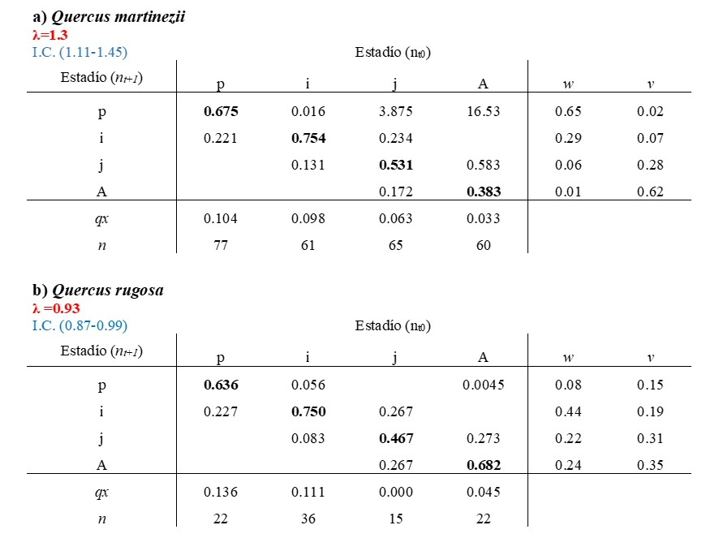
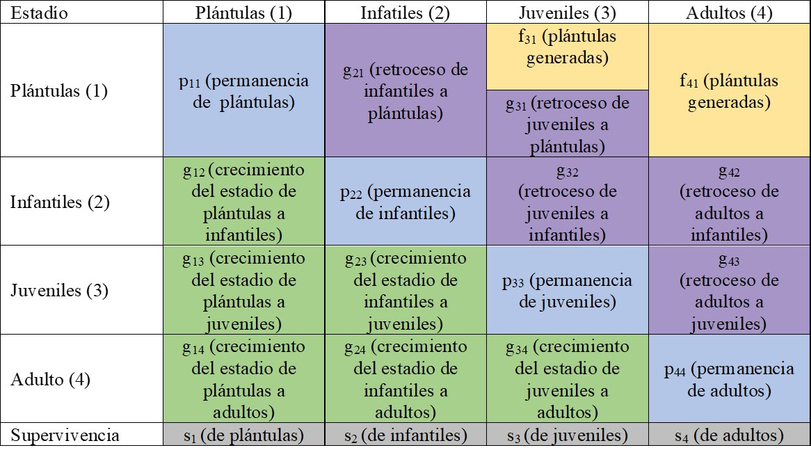
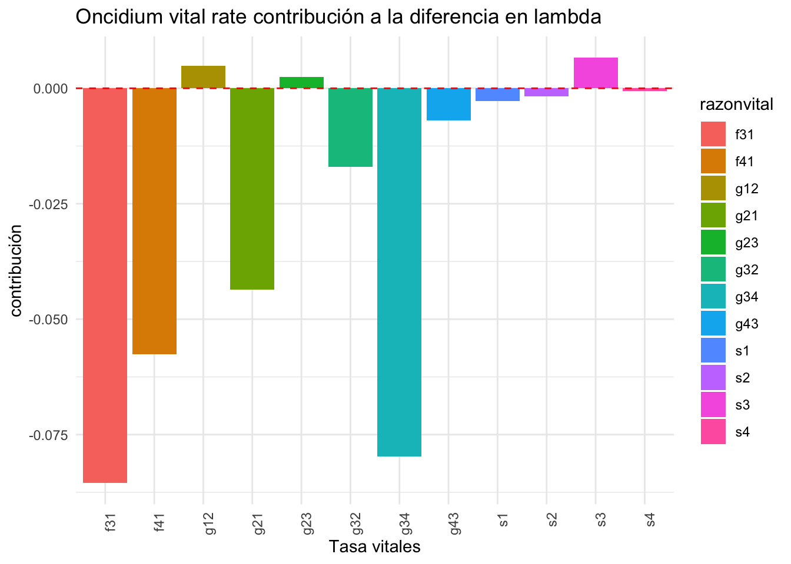
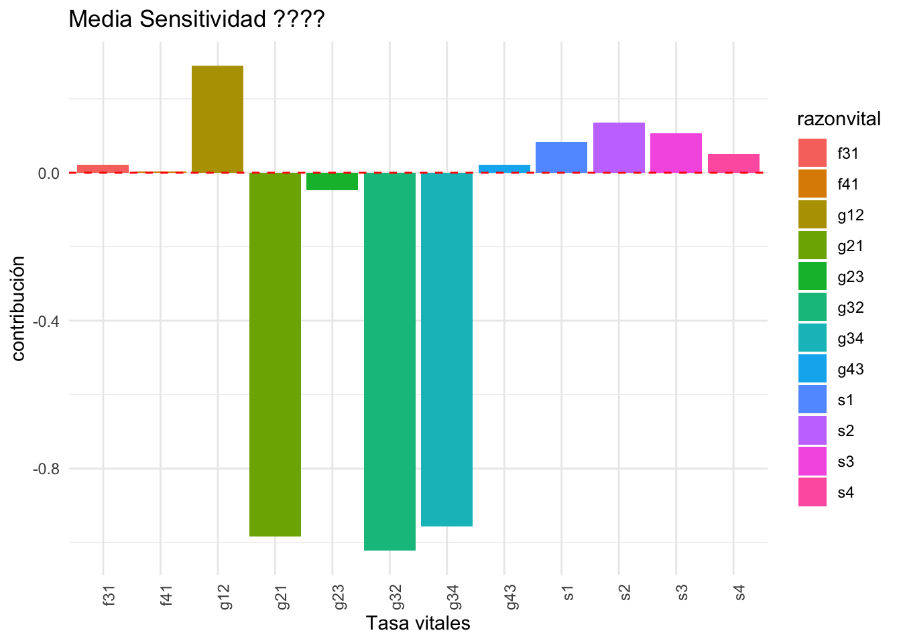

Code
library(tidyverse)
library(gt)
library(Rage)
library(DiagrammeR)
library (popbio)por : Adriana Ramírez-Martínez
library(tidyverse)
library(gt)
library(Rage)
library(DiagrammeR)
library (popbio)La variación en los estimados de los parámetros de la matriz son inherentes a la biología. Esa variación puede ser a consecuencia de múltiples factores individuales y en combinaciones, incluyendo efectos de tiempo, espacio, genético, tamaño de muestra y suerte (Hernández et al. (2024)) La variación en las parámetros de la historia de vida de una especie y las causas de estas diferencias se puede evaluar a diferentes niveles: genético, demográfico, espacial o temporal. Esta variación en ecología es la norma. La variación se encuentra en todos aspectos desde la parte genética de los individuos que compone una población, la variación ambiental y las interacciones bióticas y abióticas; además de la plasticidad fenotípica que es la interacción entre la genética y el ambiente. ¿Cuál es esa variación? ¿en otra palabra qué es lo que varía? y ¿cómo los individuos responden a las variables bióticas y abióticas? son aspectos importantes para determinar la ecología, evolución y conservación de las especies. La causa de la variación en una población se puede resumir a tres componentes principales, la genética, el efecto del ambiente y la interacción entre ambiente y genética (plasticidad fenotípica) (Hastings et al. (2021); Sun et al. (2019)). Se asume que el tamaño de muestra es suficiente grande para no ser la causa de la variación. Dentro de un contexto de dinámica poblacional las condiciones que los individuos en las poblaciones experimentan varían, ya sea durante tratamientos manipulados, localidades o periodos de tiempo, y por consecuencia los datos que colectamos con diferencias en espacio/tiempo también varían y pudieran tener efecto sobre la matriz de proyección poblacional A. Por tanto, las entradas (los parámetros) de esa matriz A variarán en tiempo/espacio o experimento y esto tendría un impacto sobre la tasa de crecimiento poblacional (λ) y en los estimados de dispersión (Intervalo de confianza o credibilidad; Caswell (2000), Caswell (2010)).
Tomando en cuenta lo anterior un Experimento de Respuesta de Tabla de Vida (ERTV) conocido también como Life Table Response Experiment (LTRE por sus siglas en inglés) descompone la diferencia o varianza en λ entre múltiples poblaciones o tiempo dentro de las contribuciones de los elementos de la matriz y sus interacciones (Caswell (1989)). Entonces al realizar este análisis podemos tener una apreciación de cómo los cambios en la matriz de datos recolectados en diferentes tiempos y espacio impactan las tasas vitales y a su vez que causan cambios en el crecimiento intrínseco λ y otros parámetros poblacionales (Caswell (1989), Caswell (2010)).
Desde la aplicación del primer ERTV por Birch (1953) en su estudio sobre el efecto de la temperatura, humedad y el alimento sobre tres especies de escarabajos de harina, las aplicaciones de estos análisis han sido variadas con diversos fines en las últimas dos décadas (Caswell (1989), Caswell (2010)). Tanto en diseños fijos en los que se manipulan uno o más factores, como en diseños aleatorios en los que se analizan parámetros demográficos en condiciones naturales no manipuladas a lo largo del tiempo o del espacio (Horvitz, Schemske, and Caswell (1997); Teitel, Klimowski, and Campbell (2016)). Los diseños fijos se han utilizado en poblaciones de animales para investigar las consecuencias demográficas de la exposición a contaminantes, la manipulación del alimento o la manipulación de la densidad poblacional (Hansen, Stenseth, and Henttonen (1999), 1999; Levin et al. (1996); Oli, Slade, and Dobson (2001)). En plantas, los análisis ERTV se han utilizado para evaluar las consecuencias demográficas de la disponibilidad de polinizadores o de la herbívora, competencia, efectos en intensidades de cosecha y de fenómenos naturales e inducidos por el humano (Davison et al. (2010); Gaoue and Ticktin (2010); Garcı́a and Ehrlén (2002); Hart-Fredeluces, Ticktin, and Lake (2021); Jacquemyn et al. (2012); Miriti, Joseph Wright, and Howe (2001); Mondragón (2009); Nordbakken, Rydgren, and Økland (2004); Schmidt et al. (2011)).
Los métodos para calcular los ERTV están constantemente actualizándose y de acuerdo con (Hernández et al. (2023)) existen 186 análisis de ERTV para 75 especies de animales y 1487 para 200 especies de plantas. Aunque en este trabajo no utilizamos la metodología expuesta por dichos autores mostramos una forma práctica de la aplicación de este análisis.
A diferencia de la elasticidad, el cual es un tipo de análisis de perturbación que examina cuánto cambiaría el crecimiento de la población si se cambiaran una de las entradas de la matriz comparando múltiples matriz, el análisis ERTV examina cuánto cambió λ en función de la variación observada en las entradas de la matriz (Caswell (2000), Caswell (2010); Horvitz, Schemske, and Caswell (1997)); y por consecuencia es un análisis que toma en cuenta el cambio de las variaciones individualmente registradas en matrices en diferentes poblaciones/ tiempo / experimentos, etc. (Caswell (2010)). Nota que ERTV es una herramienta suplementaria para evaluar el efecto de perturbaciones como los de elasticidad (Caswell (1989)), dinámica de transiciones (Stott, Townley, and Hodgson (2011)) y funciones de transferencias (Stott, Hodgson, and Townley (2012)) y no un reemplazos. Cada una de estas herramientas tiene un propósito y una interpretación diferente con sus supuestos.
Para ejemplificar el cálculo de los ERTV utilizaremos los datos recabados por Ramírez-Martínez colectados de a 2017-2018 para la orquídea epífita Oncidium brachyandrum Lindl. en un bosque de encino estacional en Oaxaca, México (Ramı́rez Martı́nez et al. (2021)). La pregunta principal del estudio era saber qué tasas vitales estaban ligadas a las variaciones en los valores de λ de poblaciones de O. brachyandrum creciendo sobre dos hospederos Quercus martinezii C.H.Mull. y Q. rugosa Née. Usando el método ERTV se pudo evaluar el efecto que tiene la variación observada en los parámetros de las matrices en función de las especies de hospedero en los que se encontraban creciendo.
Como el ERTV es una forma de análisis retrospectivo y es análogo al ANOVA (porque cuantifica los efectos observados de los elementos individuales de matriz sobre la variación observada en λ, en contraposición a los efectos esperados) se requiere de un valor de referencia para realizar las comparaciones, por lo que se toma la matriz con el valor más alto de λ como valor de referencia (Caswell (2010); Timsina et al. (2021)).
A continuación, se muestran dos matrices de tipo Lefkovitch (matrices construidas a base de estadíos) para las poblaciones de O. brachyandrum y sus valores respectivos de λ en los dos hospederos, Q. martinezii (λ=1.3; I.C: 1.11-1.45) y Q. rugosa (λ=0.98; I.C: 0.87-0.99) (Cuadro 1). Notamos claramente que el valor de λ era mayor en Q. martinezii por lo que la matriz de esta especie fue la matriz de referencia para calcular los ERTV.
Cuadro 1. Matrices de proyección poblaciones de dos poblaciones de Oncidiun brachyandrum creciendo sobre Quercus martinezii y Q. rugosa. Los valores de λ (intervalos de confianza ± 95%) son mostrados en la parte superior izquierda de cada matriz, qx, mortalidad por estadío; w, categorías estables de tamaño por estadío; valor reproductivo por estadío, n = el tamaño de muestra en el tiempo cero (el primer muestreo). p: plántula, i: infantil, j: juvenil, A; adulto (Ramı́rez Martı́nez et al. (2021)). Los valores en negritas son los valores que representan la proporción de individuos que se queda en ese estadio.

Primeramente se creó el ciclo de vida por especie de hospedero utilizando el siguiente código:
matmart <- rbind(
c(0.68, 0.02, 3.88, 16.53),
c(0.22, 0.76, 0.23, 0.0),
c(0.0, 0.13, 0.53, 0.58),
c(0.0, 0.0, 0.17, 0.38))
stages <- c("plántula", "infantil", "juvenil", "adulto") # asignar los nombres de los estadíos
title <- NULL # título del diagrama ninguno
graph <- expand.grid(to = stages, from = stages) # crear un data frame con los estadíos
graph$trans <- round(c(matmart), 4) # redondear los valores de la matriz a 4 decimales
graph <- graph[graph$trans > 0, ] # seleccionar solo los valores mayores a 0
nodes <- paste(paste0("'", stages, "'"), collapse = "; ") # crear los nodos
graph$min_len <- (as.numeric(graph$to) - as.numeric(graph$from)) * 4 # calcular la longitud de las flechasFigura x: Ciclo de vida de Oncidium brachyandrum creciendo sobre Quercus martinezii. Las flechas representan las transiciones entre estadíos, estasis y fecundidades y los números son las tasas vitales de fecundidad, supervivencia y crecimiento. El color \(\color{#ffc125}{\text{amarillo}}\) para fecundidad, \(\color{#36648b}{\text{azul}}\) para supervivencia y \(\color{#548b54}{\text{verde}}\) para crecimiento, \(\color{#7a378b}{\text{violeta}}\) para retroceso y azul oscuro para permanencia.
matrug <- rbind(
c(0.64, 0.06, 0, 0.0045),
c(0.27, 0.75, 0.27, 0.0),
c(0.0, 0.08, 0.47, 0.28),
c(0.0, 0.0, 0.27, 0.68))
stages <- c("plántula", "infantil", "juvenil", "adulto")
title <- NULL
graph <- expand.grid(to = stages, from = stages)
graph$trans <- round(c(matrug), 4)
graph <- graph[graph$trans > 0, ]
nodes <- paste(paste0("'", stages, "'"), collapse = "; ")
graph$min_len <- (as.numeric(graph$to) - as.numeric(graph$from)) * 4
graph$col <- c(
"steelblue4", "PaleGreen4", "MediumOrchid4", "steelblue4", "PaleGreen4", "MediumOrchid4","steelblue4", "PaleGreen4", "Goldenrod1", "MediumOrchid4", "steelblue4"
)
edges <- paste0("'", graph$from, "'", " -> ", "'", graph$to, "'",
"[minlen=", graph$min_len,
",fontsize=", 10,
",color=", graph$col,
",xlabel=", paste("\"", graph$trans),
"\"]\n",
collapse = ""
)
grViz(
paste(
"
digraph {
{
graph[overlap=false];
rank=same;
node [shape=", "egg", ", fontsize=", 12, "];",
nodes, "
}",
"ordering=out
x [style=invis]
x -> {", nodes, "} [style=invis]", edges,
"labelloc=\"t\";
label=\"", title, "\"
}"
)
)Figura x: Ciclo de vida de Oncidium brachyandrum creciendo sobre Quercus rugosa. Las flechas representan las transiciones entre estadíos, estasis y fecundidades y los números son las tasas vitales de fecundidad, supervivencia y crecimiento. El color \(\color{#ffc125}{\text{amarillo}}\) para fecundidad, \(\color{#36648b}{\text{azul}}\) para supervivencia y \(\color{#548b54}{\text{verde}}\) para crecimiento, \(\color{#7a378b}{\text{violeta}}\) para retroceso y azul oscuro para permanencia.
Para facilitar el entendimiento de cómo se calcula ERTV se creó la matriz con los términos de referencia (Cuadro 2).
Cuadro 2. Matriz de términos para el entendimiento de los ERTV. Donde: f= fecundidad, g= crecimiento o retrogresión, p= permanencia y s=supervivencia. Los subíndices se refieren a las transiciones entre estadíos. Nota que los parámetros de juvenil que retrogresan a plántula y y esa etapa produciendo plántulas se suman.

Una vez colocadas las matrices en la hoja de trabajo el primer paso será sumar las columnas para cada estadio, esto significará la supervivencia (s) por estadío (s1, s2, s3, s4); para el caso de Q. martinezii en plántulas sería s1= 0.68+0.22= 0.90 (Figura 3). Después se tienen que calcular las transiciones con respecto a la supervivencia; por lo que para el caso de la transición g12 para la matriz de Q. martinezii tenemos g12= 0.22/0.90=0.25; este cálculo se realiza para todas las transiciones. Los valores de fecundidad (f) se tomarán tal cual de la matriz de fecundidad mat$F. Una vez obtenido esto se procederá a realizar los cálculos con las ecuaciones que se muestran del lado derecho para cada una de las celdas y, además, esto nos sirve para verificar que hayamos calculado bien cada una de las tasas vitales. Por ejemplo, observamos que una proporción de plántulas en Q. martinezii se mantuvo (0.67) este valor se obtiene de multiplicar la supervivencia de plántulas (s1) por la sustracción de 1 menos el crecimiento de plántulas a infantiles 0.89 (1-0.25) = 0.68 (ecuación s1* (1-g12)).

Figura 3. Forma de calcular las ecuaciones para la base de ERTV.
En un archivo nuevo de Excel se arma la base, con la columna de vital rate al principio, seguido por las especies de hospederos (tratamientos) poniendo primeramente el control y después la columna de matrix (Figura 4). Esta base contendrá las ecuaciones de la matriz de referencia. Como la matriz de Q. martinezii tuvo los valores más altos de lambda está ultima de colocará en nuestra base que utilizaremos para correr el análisis ERTV.
| names.vitalrate | Martinezzi | Rugosa | matrix |
|---|---|---|---|
| lambda | 1.30000 | 0.9300 | |
| s1 | 0.89610 | 0.8636 | 0 |
| g12 | 0.24630 | 0.2631 | s1*g12 |
| s2 | 0.90163 | 0.8888 | 0 |
| g21 | 0.01818 | 0.0625 | 0 |
| g23 | 0.14540 | 0.0937 | s2*g21 |
| s3 | 0.93750 | 1.0000 | 2*(1-g23-g21) |
| g32 | 0.25000 | 0.2667 | s2*g23 |
| g34 | 0.18330 | 0.2667 | 0 |
| s4 | 0.96670 | 0.9545 | f31 |
| g43 | 0.60340 | 0.2857 | s3*g32 |
| f31 | 3.88000 | 0.0001 | 3*(1-g34-g32) |
| f41 | 16.53000 | 0.0045 | s3*g34 |
| NA | NA | NA | f41 |
| NA | NA | NA | 0 |
| NA | NA | NA | s4*g43 |
| NA | NA | NA | s4*(1-g43) |
Figura 4. Ejemplo de base para poder calcular los ERTV.
Es importante colocar en la segunda fila la palabra lambda en la primera columna y después los valores según corresponda a cada tratamiento. Debido a que en Q. rugosa no hubo producción de plántulas (f31) pero en Q. martinezii si hubo se coloca una cantidad muy pequeña pero mayor a cero (e.g. 0.00001) para que se pueda correr el análisis, para las otras transiciones en valor puede ser 0. Una vez culminada la base se guarda el archivo en formato de texto, para continuar en R. Es importante comenzar a colocar las ecuaciones a partir de la segunda fila en la columna matrix.
Subir la base de datos de la carpeta de trabajo y cargarla en R.
# Asegurarse de tener instalado y cargado el paquete 'popbio' package
# oncidium<-read.table("data/vitalratesoncidium.txt", sep="\t", header=TRUE, stringsAsFactors=FALSE, fill=TRUE)
# Aqui la alternativa si tiene los datos en una hoja de Excel
#oncidium
Oncidium# A tibble: 17 × 4
names.vitalrate Martinezzi Rugosa matrix
<chr> <dbl> <dbl> <chr>
1 lambda 1.3 0.93 ""
2 s1 0.896 0.864 "0"
3 g12 0.246 0.263 "s1*g12"
4 s2 0.902 0.889 "0"
5 g21 0.0182 0.0625 "0"
6 g23 0.145 0.0937 "s2*g21"
7 s3 0.938 1 "2*(1-g23-g21)"
8 g32 0.25 0.267 "s2*g23"
9 g34 0.183 0.267 "0"
10 s4 0.967 0.954 "f31"
11 g43 0.603 0.286 "s3*g32"
12 f31 3.88 0.0001 "3*(1-g34-g32)"
13 f41 16.5 0.0045 "s3*g34"
14 <NA> NA NA "f41"
15 <NA> NA NA "0"
16 <NA> NA NA "s4*g43"
17 <NA> NA NA "s4*(1-g43)" Debido a que la columna de matrix contiene más filas con datos nos aparecerá la leyenda NA en las otras columnas esto se refiere a que no hay valores disponibles para esas filas
Para extraer los nombres de las tasas vitales (de la fila 2 a la 13), sin incluir el valor de λ el cual está en la primera
razonvital<-Oncidium$names.vitalrate[2:13]
razonvital # mostrar los nombres del objeto razonvital [1] "s1" "g12" "s2" "g21" "g23" "s3" "g32" "g34" "s4" "g43" "f31" "f41"Extraer tasas vitales de de la orquídea Oncidium brachyandrum que crecen sobre Q. martinezzi y dejar a lambda a un lado
Martinezzi<-Oncidium$Martinezzi [2:13] # [2:13] se refiere a la fila 2 hasta la 13.
names(Martinezzi)<-razonvital # asignar los nombres de las tasas vitales
Martinezzi s1 g12 s2 g21 g23 s3 g32 g34
0.89610 0.24630 0.90163 0.01818 0.14540 0.93750 0.25000 0.18330
s4 g43 f31 f41
0.96670 0.60340 3.88000 16.53000 Extraer tasas vitales de de la orquidea Oncidium brachyandrum que crecen sobre Q. rugosa y dejar a lambda a un lado
Rugosa<-Oncidium$Rugosa [2:13]
names(Rugosa)<-razonvital # asignar los nombres de las tasas vitales
Rugosa s1 g12 s2 g21 g23 s3 g32 g34 s4 g43 f31
0.8636 0.2631 0.8888 0.0625 0.0937 1.0000 0.2667 0.2667 0.9545 0.2857 0.0001
f41
0.0045 matrix.el<-as.expression(parse(text=Oncidium$matrix))
matrix.elexpression(0, s1 * g12, 0, 0, s2 * g21, 2 * (1 - g23 - g21),
s2 * g23, 0, f31, s3 * g32, 3 * (1 - g34 - g32), s3 * g34,
f41, 0, s4 * g43, s4 * (1 - g43))expression(s1*(1-g12), s1*g12, 0, 0, s2*g21, s2*(1-g23-g21),
s2*g23, 0, f31, s3*g32, s3*(1-g34-g32), s3*g34, f41, 0, s4*g43,
s4*(1-g43))expression(s1 * (1 - g12), s1 * g12, 0, 0, s2 * g21, s2 * (1 -
g23 - g21), s2 * g23, 0, f31, s3 * g32, s3 * (1 - g34 - g32),
s3 * g34, f41, 0, s4 * g43, s4 * (1 - g43))Nota que usando la función vitalsens se pueden calcular las sensibilidades y elasticidades de las tasas vitales de las matrices de Oncidium brachyandrum creciendo sobre Q. martinezii y Q. rugosa en un mismo objeto.
Martinezzi.se<-vitalsens(matrix.el, Martinezzi)
Martinezzi.se estimate sensitivity elasticity
s1 0.89610 0.120542139 0.052664512
g12 0.24630 0.438561960 0.052664512
s2 0.90163 0.166235301 0.073075921
g21 0.01818 -0.754130522 -0.006684410
g23 0.14540 0.233443420 0.016548885
s3 0.93750 0.112464437 0.051405452
g32 0.25000 -1.371318930 -0.167147994
g34 0.18330 -1.191967463 -0.106524512
s4 0.96670 0.047010515 0.022156921
g43 0.60340 0.014244139 0.004190484
f31 3.88000 0.019221293 0.036361100
f41 16.53000 0.001980653 0.015962610Rugosa.se<-vitalsens(matrix.el, Rugosa)
Rugosa.se estimate sensitivity elasticity
s1 0.8636 0.006581052 3.213853e-03
g12 0.2631 0.021601660 3.213853e-03
s2 0.8888 0.071964612 3.616938e-02
g21 0.0625 -1.492714505 -5.275636e-02
g23 0.0937 -0.960775138 -5.090722e-02
s3 1.0000 0.071247612 4.028918e-02
g32 0.2667 -0.361373194 -5.450006e-02
g34 0.2667 -0.531264040 -8.012195e-02
s4 0.9545 0.022079896 1.191766e-02
g43 0.2857 0.033892600 5.475619e-03
f31 0.0001 0.028076228 1.587658e-06
f41 0.0045 0.006891115 1.753558e-05En esta parte se calculará la diferencia entre las tasas vitales de Oncidium brachyandrum creciendo sobre Q. martinezii y Q. rugosa. ¿Como se interpreta estos resultados?
vr.dif.Martinezzi.Rugosa<-Rugosa-Martinezzi
vr.dif.Martinezzi.Rugosa s1 g12 s2 g21 g23 s3 g32 g34
-0.03250 0.01680 -0.01283 0.04432 -0.05170 0.06250 0.01670 0.08340
s4 g43 f31 f41
-0.01220 -0.31770 -3.87990 -16.52550 En este paso se calculará la tasa vital media para Oncidium brachyandrum creciendo sobre Q. martinezii y Q. rugosa. La tasa vital media se calcula sumando las tasas vitales de las dos matrices y dividiendo entre 2.
vr.promedia.Martinezzi.Rugosa<-((Rugosa+Martinezzi)/2) #calcular la tazas vitales parta la matrix promedia
# Nota: si se tuvieran 3 matrices se sumarían las tasas vitales de las tres dividido por 3.
vr.promedia.Martinezzi.Rugosa s1 g12 s2 g21 g23 s3 g32 g34
0.879850 0.254700 0.895215 0.040340 0.119550 0.968750 0.258350 0.225000
s4 g43 f31 f41
0.960600 0.444550 1.940050 8.267250 En este paso se calculará las sensibilidades y elasticidades para la matriz promedia de Oncidium brachyandrum creciendo sobre Q. martinezii y Q. rugosa.
media.sens.Martinezzi.Rugosa<-vitalsens(matrix.el, vr.promedia.Martinezzi.Rugosa)
media.sens.Martinezzi.Rugosa estimate sensitivity elasticity
s1 0.879850 0.083822341 0.038554963
g12 0.254700 0.289560608 0.038554963
s2 0.895215 0.134980693 0.063169999
g21 0.040340 -0.984263812 -0.020756746
g23 0.119550 -0.046349418 -0.002896715
s3 0.968750 0.106300200 0.053834126
g32 0.258350 -1.022414354 -0.138085243
g34 0.225000 -0.956257799 -0.112478463
s4 0.960600 0.050717590 0.025469068
g43 0.444550 0.022031005 0.005119963
f31 1.940050 0.022040319 0.022353352
f41 8.267250 0.003482957 0.015052932LTRE.contrib.Martinezzi.Rugosa<-vr.dif.Martinezzi.Rugosa*media.sens.Martinezzi.Rugosa$sensitivity
LTRE.contrib.Martinezzi.Rugosa s1 g12 s2 g21 g23
-0.0027242261 0.0048646182 -0.0017318023 -0.0436225722 0.0023962649
s3 g32 g34 s4 g43
0.0066437625 -0.0170743197 -0.0797519005 -0.0006187546 -0.0069992504
f31 f41
-0.0855142334 -0.0575576132 LTRE.resultados.Martinezzi.Rugosa<- data.frame(razonvital=razonvital,
rug.vr=Rugosa,
mart.vr=Martinezzi,
vr.differencia=vr.dif.Martinezzi.Rugosa,
media.sens=media.sens.Martinezzi.Rugosa$sensitivity,
contribucion=LTRE.contrib.Martinezzi.Rugosa)
gt(LTRE.resultados.Martinezzi.Rugosa)| razonvital | rug.vr | mart.vr | vr.differencia | media.sens | contribucion |
|---|---|---|---|---|---|
| s1 | 0.8636 | 0.89610 | -0.03250 | 0.083822341 | -0.0027242261 |
| g12 | 0.2631 | 0.24630 | 0.01680 | 0.289560608 | 0.0048646182 |
| s2 | 0.8888 | 0.90163 | -0.01283 | 0.134980693 | -0.0017318023 |
| g21 | 0.0625 | 0.01818 | 0.04432 | -0.984263812 | -0.0436225722 |
| g23 | 0.0937 | 0.14540 | -0.05170 | -0.046349418 | 0.0023962649 |
| s3 | 1.0000 | 0.93750 | 0.06250 | 0.106300200 | 0.0066437625 |
| g32 | 0.2667 | 0.25000 | 0.01670 | -1.022414354 | -0.0170743197 |
| g34 | 0.2667 | 0.18330 | 0.08340 | -0.956257799 | -0.0797519005 |
| s4 | 0.9545 | 0.96670 | -0.01220 | 0.050717590 | -0.0006187546 |
| g43 | 0.2857 | 0.60340 | -0.31770 | 0.022031005 | -0.0069992504 |
| f31 | 0.0001 | 3.88000 | -3.87990 | 0.022040319 | -0.0855142334 |
| f41 | 0.0045 | 16.53000 | -16.52550 | 0.003482957 | -0.0575576132 |
Se puede crear un gráfico de la contribucioón de cada tasa vitales sobre la historia de vida de la especies comparando las dos matrix
ggplot(LTRE.resultados.Martinezzi.Rugosa, aes(y=contribucion, x=razonvital, fill=razonvital))+
geom_bar(stat="identity")+
theme_minimal()+
theme(axis.text.x = element_text(angle = 90, hjust = 1))+
labs(title="Oncidium vital rate contribución a la diferencia en lambda", x="razonvital", y="contribución")+
geom_hline(yintercept=0, linetype="dashed", color = "red")+
xlab("Tasa vitales")
Figure 5. Resultados de un Experimento de Respuesta de la Tabla de Vida (ERTV) llevado a cabo para evaluar las contribuciones de las entradas de la matriz a la variación observada en λ.
De acuerdo con el análisis de elasticidad para cada una de las poblaciones de O. brachyandrum, tanto en Q. martinezii como en Q. rugosa la permanencia de individuos infantiles es la que tiene un mayor impacto sobre los valores de la tasa de crecimiento poblacional (Figura 6). De acuerdo al ERTV, el cual toma en cuenta las diferencias en las tasas vitales y la sensibilidad de lambda que es una función no linear de esas tasas vitales, podemos observar que la fecundidad (fsa) y el crecimiento de plantulas a juveniles (gsj), de juveniles a adultos (gja) y el retroceso de adultos a juveniles (gaj) tiene las mayores contribuciones a las diferencias en lambda entre Q. martinezii y Q. rugosa que la permanencia de plántulas.
Figure 6. Resultados de los análisis de elasticidad, para dos poblaciones de Oncidium brachyandrum creciendo sobre Quercus martinezii y Q. rugosa. Por proceso demográfico (a) y por estadío (b).
ggplot(LTRE.resultados.Martinezzi.Rugosa, aes(y=media.sens, x=razonvital, fill=razonvital))+
geom_bar(stat="identity")+
theme_minimal()+
theme(axis.text.x = element_text(angle = 90, hjust = 1))+
labs(title="Media Sensitividad ????", x="razonvital", y="contribución")+
geom_hline(yintercept=0, linetype="dashed", color = "red")+
xlab("Tasa vitales")
Ahora enseñar como hacer estos análisis sin tener que usar Excel, aquí un set de script para aplicar a Oncidium brachyandrum.
Sugiero que cambie las gráficas a ggplot2 para que se vean más bonitas y consistencia en el libro de herramientas. YO TE AYUDO CON ESTE PASO
AHORA: Si se puede hacer los analisis sin todos los pasos de Excel, se puede hacer directamente en R.
Revisión: